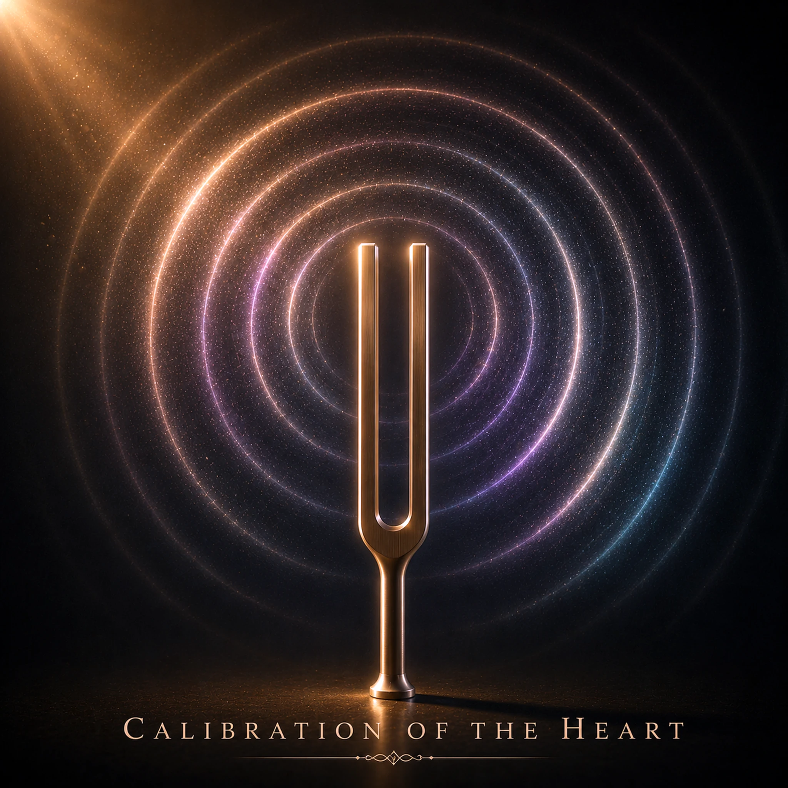

Calibration of the Heart

Lyrics
Verse 1
We all begin with default settings...
Then life rewrites a few.
Every now and then it's worth
Checking what is still true.
Chorus
Before assuming something's broken...
Before changing every part...
Maybe all that's really needed
Is calibration of the heart.
Verse 2
When life hits us hard,
And we feel completely used
We compare ourselves to others...
And the standards slowly move...
Chorus
Before assuming something's broken...
Before changing every part...
Maybe all that's really needed
Is calibration of the heart.
Verse 3
You know the feeling of being out of wack
Things still work… just not reading right
It might be time to take a look back
To the Source of truth and light.
Chorus
Before assuming something's broken...
Before changing every part...
Maybe all that's really needed
Is calibration of the heart.
Bridge
We came with our factory defaults.
As long as we keep ourselves aligned
With the true Source and perfect Guide
We’ll live our lives as we’re designed.
Chorus
Before assuming something's broken...
Before changing every part...
Maybe all that's really needed
Is calibration of the heart.
Final Chorus
Before assuming something's broken...
Before changing every part...
Maybe all that's really needed
Is calibration of the heart.
Devotional
Returning to the True Standard
A tuning fork is useful because it offers a dependable reference. An instrument may still produce sound even when it has drifted from the correct pitch. The song, Calibration of the Heart, begins with a similarly gentle question: before declaring something broken, might we need to check what we are measuring against? Scripture supplies the answer to that question. “Thy word is a lamp unto my feet, and a light unto my path” (Psalm 119:105, KJV). God's Word—not our feelings, the judgments of others, or the song itself—is the standard.
Life changes us. Difficulties, disappointments, habits, and expectations can influence how we see ourselves and the world. In the second verse, comparison becomes especially important: the standards slowly move. When we measure our lives against another person's appearance, achievements, or approval, the reference point never stays still. Second Corinthians 10:12 warns against people “measuring themselves by themselves, and comparing themselves among themselves.” A shifting comparison cannot reliably tell us whether we are living faithfully.
Yet calibration does not mean that we were spiritually perfect at the beginning and only need to recover our original settings. Scripture is clear that “all have sinned, and come short of the glory of God” (Romans 3:23). Our need is deeper than adjustment: we need the grace of Jesus Christ. Salvation is God's gift, not the result of tuning ourselves well enough to deserve it. Ephesians 2:8–9 says, “For by grace are ye saved through faith” and “not of works.” Only in Christ can a sinner be made new (2 Corinthians 5:17).
For the believer, however, the image of calibration speaks beautifully to an ongoing responsibility. Romans 12:2 tells us, “be ye transformed by the renewing of your mind,” so that we may discern God's will. That renewal is not accomplished by chasing every new opinion. It involves returning to Scripture, examining our assumptions, and yielding to the Holy Spirit. The question is not merely, Do I feel right? but Does what I believe and do agree with what God has said?
The song's third verse describes something that still works, but is not reading right. We may continue with our routines while impatience, resentment, fear, or pride gradually distort our responses. David's prayer gives us a better way to examine ourselves: “Search me, O God, and know my heart: try me, and know my thoughts” (Psalm 139:23). He continues, “see if there be any wicked way in me, and lead me in the way everlasting” (Psalm 139:24). This is more than self-assessment; it is an invitation for God to reveal what needs correction.
The bridge points to the true Source and perfect Guide. Jesus identifies Himself as “the way, the truth, and the life” (John 14:6). His words are not one possible reference among many. As we abide in Him and keep His commandments, we learn to distinguish truth from convenient substitutes (John 15:4–5; John 14:15). That does not mean every hardship is a sign of spiritual misalignment, nor that every limitation needs fixing. Sometimes faithfulness means accepting a difficult circumstance while keeping our trust fixed on God.
So the chorus offers a wise pause before drastic conclusions: Before assuming something's broken... It does not tell us to ignore genuine sin, injury, or problems requiring practical help. It asks us first to test our conclusions against a trustworthy measure. Proverbs 3:5–6 directs us to “Trust in the LORD with all thine heart” and “in all thy ways acknowledge him.” The Lord promises to direct our paths. When the heart drifts, we do not need to invent a new standard; we need to return to the One who is true.
Perhaps today is a good time to ask: What has been setting my standard lately—God's Word, or something that keeps moving? Bring that question to Him. Let Scripture correct what is false, confirm what is true, and guide the next faithful step. That is the deeper invitation behind the song, Calibration of the Heart.
Prayer
Heavenly Father, show me where my thoughts and choices have drifted from Your truth. Keep me from measuring myself by changing human standards. Thank You for the salvation and new life given through Jesus Christ. Renew my mind through Your Word, guide my heart by Your Spirit, and help me walk faithfully in Your ways. In Jesus’ name, Amen.
Extra Info — Scripture Map
The reliable standard of truth: Psalm 119:105; John 17:17
The danger of shifting comparisons: 2 Corinthians 10:12; Galatians 6:4
Our need for grace and new life: Romans 3:23; Ephesians 2:8–9; 2 Corinthians 5:17
Renewing the mind and examining the heart: Romans 12:2; Psalm 139:23–24
Christ our guide and source: John 14:6; John 15:4–5
Trusting God for direction: Proverbs 3:5–6